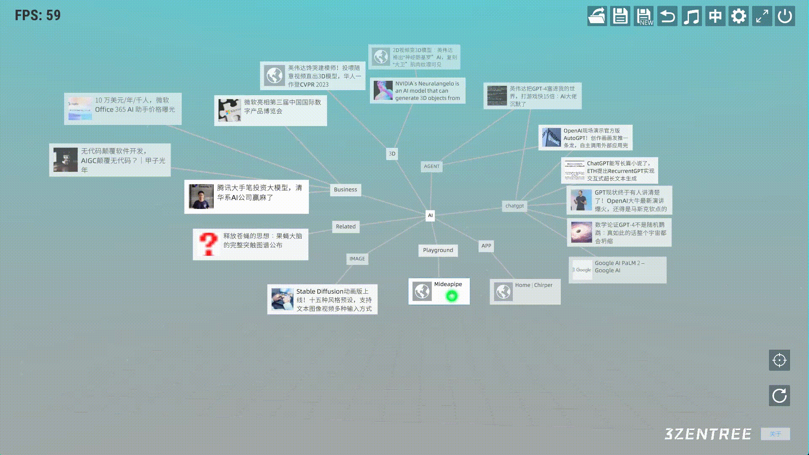
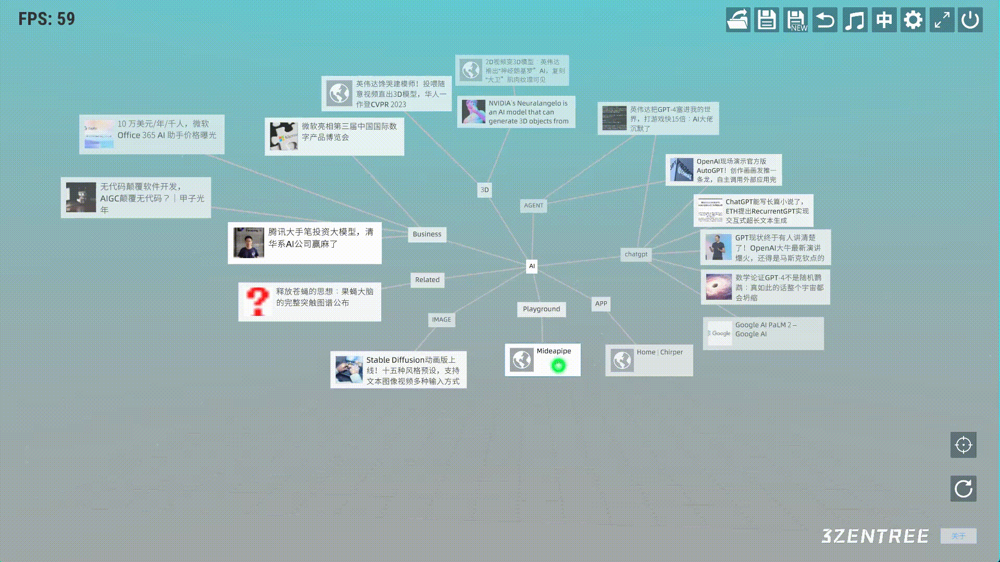

三生之树操作指南(v0.2b) - 树文件操作
树文件操作
-
树链接
创建一个tree结点。我们右击任意结点，点击加号图标在弹出的面板上选择tree类型。输入标题，然后点击链接按钮选择需要链接的树文件，点击创建。

在预览栏选择的预览图片，预览图片支持云端存储。

-
返回上一棵关联树
点击Tree结点跳转到另外一颗树后，可以点击导航栏返回按纽返回上一颗树。

-
清空树
点击右下角的清空按钮清空当前树，相当于重建一棵空的树。


在预览栏选择的预览图片，预览图片支持云端存储。